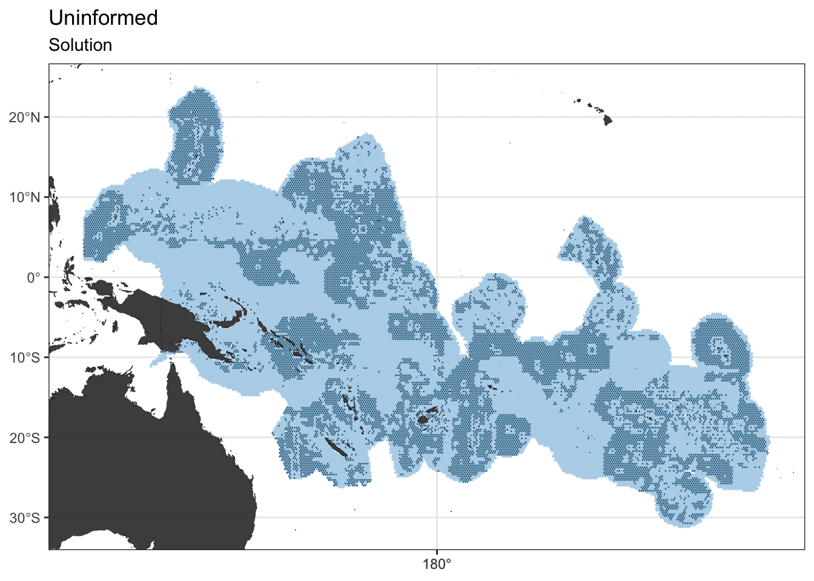
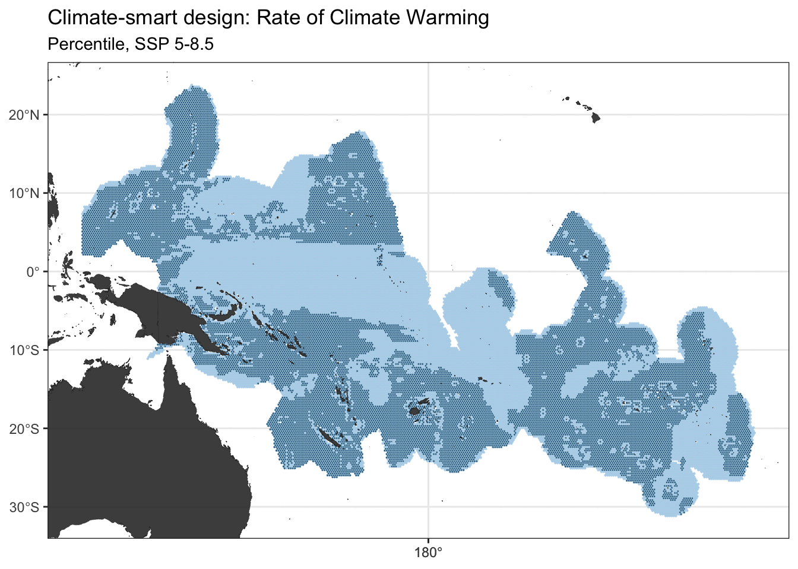
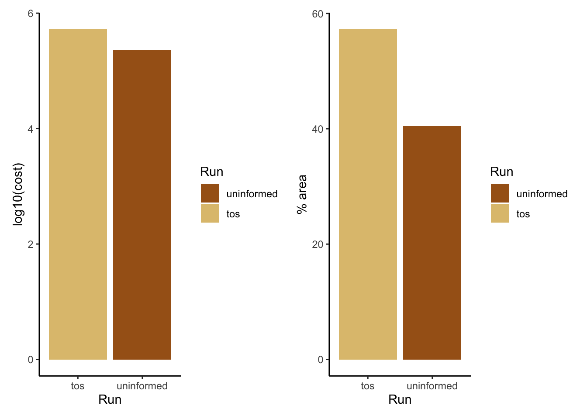
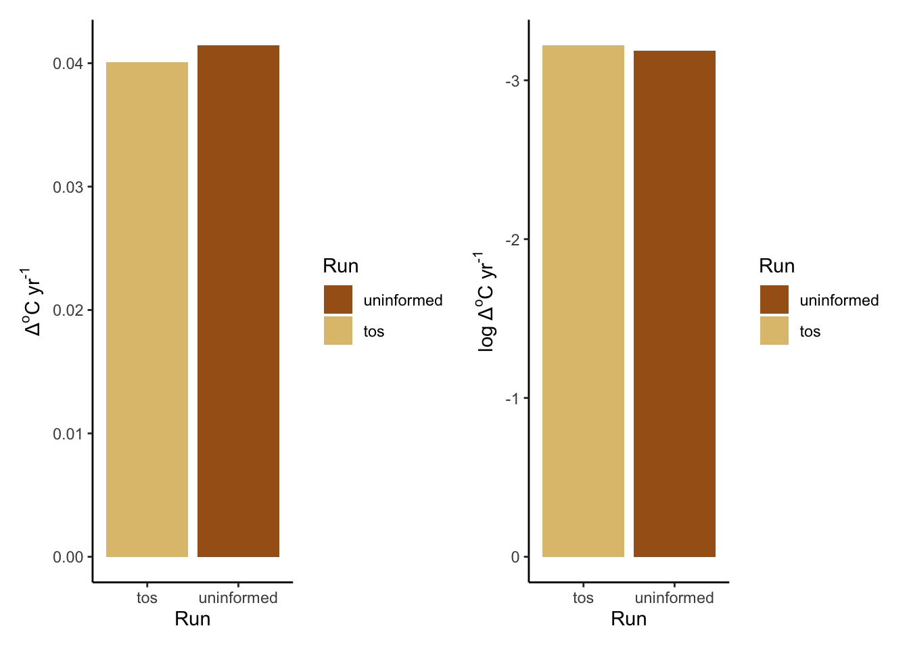
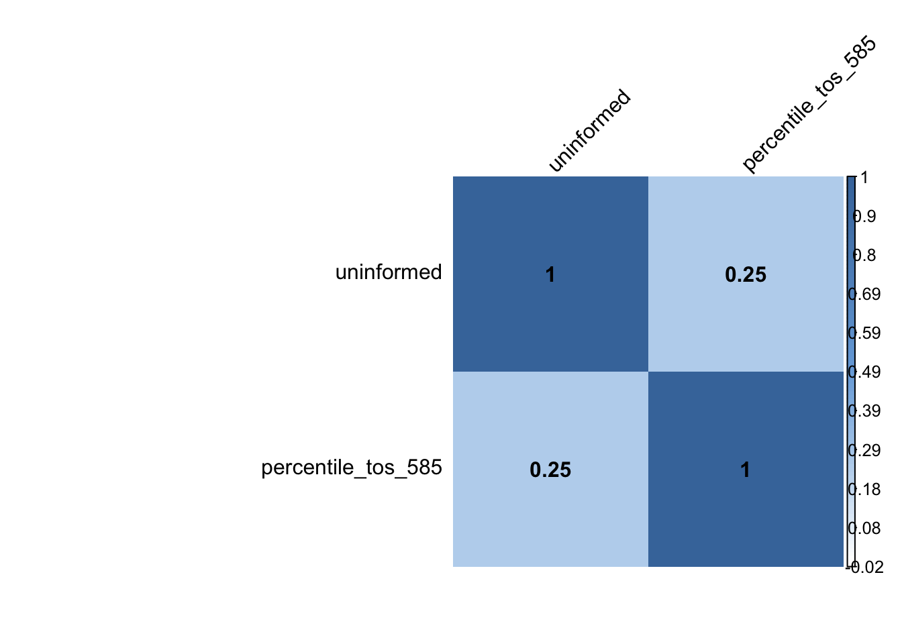

Chapter 3 Research Question #1
How much more would a climate-smart spatial design cost, compared to a climate-uninformed spatial design?
To answer this question, we create a climate-uninformed spatial design. As the name suggests, it does not involve any climate layer in its design. It only utilizes the AquaMaps Layers and cost layer. The runs here show only those forced under SSP 5-8.5. Then, we compare it with a climate-smart spatial design. This design utilizes the same layers as the climate-uninformed design, with the addition of climate layers Here, we chose to use rate of climate warming as the climate layer. Hence, climate refugia (i.e. areas of low exposure) are defined as areas that have magnitudes of climate warming \(\leq\) median climate warming.
For this comparison, we chose to use the “percentile” approach, one of the three climate-smart approaches explored in this study. The two other approaches are detailed in the subsequent sections. In this approach, we incorporate the climate metric (i.e. rate of climate warming) into the spatial design as a “filtering metric” for the biodiversity/conservation features (i.e. AquaMaps species distribution maps). By this, I mean, we only retain the planning units of each specific feature if it coincides with its species’ climate refugia (i.e. planning unit has a climate warming value \(\leq\) median climate warming of the feature). By doing so, we ensure that we only protect climate refugia if they have any biodiversity value.
3.1 Climate-uninformed spatial design
We set up the climate-uninformed spatial planning problem:
p1 <- prioritizr::problem(out_sf, features, "Cost_squish") %>%
add_min_set_objective() %>%
add_relative_targets(0.4) %>% # using 40% as the target percentage of protection
add_binary_decisions() %>%
add_gurobi_solver(gap = 0, verbose = FALSE)And we solve it:
s1 <- prioritizr::solve(p1)
3.2 Climate-smart spatial design (Rate of Climate Warming; “Percentile” Approach)
We set up the climate-smart spatial planning problem:
p2 <- prioritizr::problem(out_sf, features, "Cost_squish") %>%
add_min_set_objective() %>%
add_relative_targets(0.8) %>% # using Effective 40% Protection. Since we only retained planning units that intersect with both biodiversity features and areas <= 50th percentile (0.5), by multiplying this by 0.8 target, we effectively protect only 40%.
add_binary_decisions() %>%
add_gurobi_solver(gap = 0, verbose = FALSE)And we solve it:
s2 <- prioritizr::solve(p2)
3.3 Climate-uninformed versus Climate-smart spatial designs
We now compare the two designs.
Total cost and percent area selected for protection:
ggSummary_Cost + ggSummary_Area
ggSummary_Warming + ggSummary_LogWarming
Cohen’s Kappa Correlation Matrix:

## uninformed percentile_tos_585
## uninformed 1.0000000 0.2492982
## percentile_tos_585 0.2492982 1.0000000